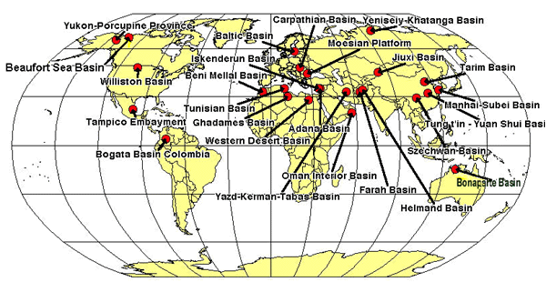

The Geologic Column
and its Implications for the Flood
Copyright © 2001 by
Glenn Morton
[Last Update: February 17, 2001]

Contents
Abstract
This article is a detailed examination of the young earth creationist claim that the geologic column does not exist. It is shown that the entire geologic column exists in North Dakota. I do this not to disprove the Bible but to encourage Christians who are in the area of apologetics to do a better job of getting the facts straight.
I recently had a private discussion with a gentleman concerning the nature of the Haymond beds in Southwestern Texas. The issues which this raised might be of some interest.
The Haymond beds consist of 15,000 alternating layers of sand and shale. The sands have several characteristic sedimentary features which are found on turbidite deposits. Turbidites are deep water deposits in which each sand layer is deposited in a brief period of time, by a submarine "landslide" (I am trying to avoid jargon here) and the shale covering it is deposited over a long period of time. I made the comment that one feature of this deposit made it an excellent argument for an old earth and local flood.
Earle F. McBride (1969, p. 87-88) writes:
Two thirds of the Haymond is composed of a repetitious alternation of fine- and very fine-grained olive brown sandstone and black shale in beds from a millimeter to 5 cm thick. The formation is estimated to have more than 15,000 sandstone beds greater than 5 mm thick." p. 87. "Tool-mark casts (chiefly groove casts), flute casts and flute-lineation casts are common current-formed sole marks. Trace fossils in the form of sand-filled burrows are present on every sandstone sole, but nearly absent within sandstone beds.
For the non-geologist who is reading this this means that the burrows are in the shales (which take a long time to be deposited) so the animals would have lots of time to dig their burrows. The sandstones are the catastrophic deposit which covers and fills in the burrows with sand. The fact that there are no burrows in the sand proves that the sand was deposited rapidly.
I pointed out that if the all the sedimentary record had to be deposited in a year long flood of Noah, then given that the entire geologic column in this area is 5000 meters thick, and that the Haymond beds are 1300 m thick, 1300/5000*365 days = 95 days for the Haymond beds to be deposited. Since there are 15,000 of these layers, then 15,000/95 days = 157 layers per day need to be deposited. The problem is that the animals which made the burrows mentioned above, need some time to re-colonize and re-burrow the shale. Is it really reasonable to believe that 157 times per day or 6.5 times per hour, for all the burrowers to be buried, killed, and a new group colonize above them for the process to be repeated? Even allowing for a daily cycle, would require 41 years for this deposit to be laid down.
The response surprised me a little. My friend suggested that all I had proven was that the Haymond beds were not deposited by the flood but that other beds were. This suggests that we need to find the flood layer. What I have done is the examine each of the layers in the Williston Basin of Montana, North Dakota and southern Canada with the purpose of determining if any of the layers could have been the flood deposit. I have mentioned before that the entire geologic column exists in this locale (contrary to young-earth creationist claims) so there is not likely to be anything significant missing here. I might mention that some of the beds I will discuss are quite extensive, covering large parts of the Western United States. I mention this because some of the articles refer to regions where the rocks, deeply buried in North Dakota, come to the surface far from that area.
This long article is divided into a description of the geologic column, and then a conclusion. Since there are 15,000 feet of sedimentary rock, it takes a lot to describe the whole column. Everything is documented for those that want to check me out. I would suggest that if you get bored reading the description of the column, skip to the conclusion section which is relatively short.
One note on terminology: a formation is a sequence of beds of different lithologies. A formation may include marine and continental layers.
The definition of the geologic column that I will use is the one used by Morris and Parker (1987, p. 163) in the following quotation:
Now the geologic column is an idea, not an actual series of rock layers. Nowhere do we find the complete sequence. Even the walls of the Grand Canyon included only five of the twelve major systems (one, five, six and seven, with small portions here and there of the fourth system, the Devonian.
They are saying that there is no place on earth where all twelve of the periods are found. Given that the precambrian is always found if one drills deep enough we merely need to find places with the 11 phanerozoic periods. What we will see below is that such situations do occur. In point of fact Morris and Parker define the geologic column in a silly fashion. There is no place on earth that has sediments from every single day since the origin of the earth. No geologist would require this level of detail from the geological column. But if there are sediments left at a given site once every hundred thousand years or so, then at the scale of the geological column, the entire column would exist.There would still be erosional surfaces contained in that column and that would mean that some days left no sediment at a given location to mark their existence.
Woodmorappe has written an article for Creation Ex Nihilo Technical Journal which he has published on the web. He says:
Creationists do not say that every single days deposits must be preserved! The fact is that Morris and Parker are not talking about a little of the daily sediment being missing. If we read the Morris and Parker quote again, we can see that the 100- or 200-mile column is not the presumed product of daily sedimentation. Rather, the 100- to 200-mile column represents the sum of the thickest sections from the field of each of the ten Phanerozoic systems and/or their major components.Now what does all this mean? Common sense teaches us that 16 miles (at most) which exists, out of a total of 100 or 200 miles, is a very incomplete column!
Woodmorappe rests his entire case upon this 200 mile thick column which he says must be there if the geologic column is to be real. We will examine that statement. Woodmorappe writes:
There are a number of locations on the earth where all ten periods of the Phanerozoic geologic column have been assigned. However, this does not mean that the geological column is real. Firstly, the presence or absence of all ten periods is not the issue, because the thickness of the sediment pile, even in those locations, is only a small fraction (8-16% or less) of the total thickness of the hypothetical geologic column. Without question, most of the column is missing in the field.
This of course is NOT the definition of the geologic column that ANY geologist would use. If we can show that Woodmorappe's logic is flawed, then we can show that his case falls flat on its face. Woodmorappe and other young-earth creationists are trying to say that if we add the thickest sediments in each period from anywhere in the world this defines the entire geologic column. This is a ridiculous and silly argument. This is like saying the following:
The Antarctic region receives less than 1/10 of an inch of snow per year. Places in Colorado Ski country recieve up to 5-10 feet of snow per year and Houghton, Michigan receives up to 20 feet per year. Let us add up the maximum snow fall anywhere in the world each day of the year. Most likely we would tally up something like 200 feet of snow as the total maximum daily snow fall. If we then conclude that this means that Antarctica only gets 1/2000 of the yearly snow fall and therefore Antarctica doesn't represent a full years snowfall, we would have done the same thing that Woodmorappe is doing with the geologic column. This is rather spurious to say the least. Antarctica received a full year's worth of snowfall--it is just a smaller amount than Vail, Colorado. Similarly to add up the maximum sedimentation in each geologic period and then expect that that represents the entire geologic column is perverse. Woodmorappe's argument doesn't stand up.
Today, Woodmorappe claims that the real issue with regard to the geologic column is the small percentage of the maximum sedimentation that exists. If Woodmorappe really felt that the existence of the 10 periods was of no importance, if Woodmorappe really thought that the small percentage of the 200 miles was the real issue, why did he spend his entire 1981 article talking about where the 10 periods existed? One would think he would spend the most time on the most important issue. He spent the most space discussing the 10 periods and I can't find a single paragraph on what he now says is important. Woodmorappe's entire article belies his current claim.
We will now examine the strata that form the entire geological column which is found in North Dakota.
The Geologic Column in North Dakota
The Cambrian of this region consists of the Deadwood Formation. This formation consists of a lower sandstone with scolithus burrows (Wilmarth, Part 1, 1938, p. 578.). These scolithos burrows are widely found in similar basal sandstones around the world. They are found in Newfoundland, Scotland, Antarctica, Greenland always in Cambrian sands. Thus, the basal sandstone appears to have been the tranquil home for whatever animal made the scolithos burrows. Sedimentologically, these basal quartzites are nearly pure sand and must have taken a lot of time to winnow the shale out from them. It is unlikely that this winnowing could be accomplished in a yearlong flood with all its turbulence. There are some trilobites found in the Cambrian strata.
Above this is a black shale. Shale, due to the very small particle size requires quiet, tranquil waters for deposition to take place. This is one of the unrecognized difficulties of flood geology. Every shale, which is approximately 46% of the geologic column, is by its existence, evidence for tranquil waters.
Above this is the Ordovician Winnipeg formation. It consists of a basal sand whose lithology is very similar to that of the Deadwood scolithus sand, "suggesting that the Deadwood Sandstone may be a source for the Winnipeg Sandstone" (Bitney, 1983, p. 1330). This would mean that local erosion was the cause of the sand for the Winnipeg sand rather than a world wide catastrophe. The Winnipeg does not have scolithus burrows.
Above this is the Icebox shale. Once again a shale requires still water for deposition.
Above this lies 1300 feet of Ordovician limestone and dolomite. These are the Red River, Stony Mountain and Stonewall formations, collectively known as the Bighorn Dolomite. (data from W. H. Hunt Trust Larson #1 well, Mckenzie Co., North Dakota) These can not be the flood deposits for a reason of heat. Each gram of carbonate gives off about 1207 kilocalories per mole (Whittier et al, 1992, p. 576). Since the density of the carbonate is around 2.5 g/cc this means that there are 2.2 x 106 moles of carbonate deposited over each meter. Multiply this by 1,207,000 joules per mole and divide by the solar constant and you find that to deposit these beds in one year requires that the energy emitted by each meter squared would be 278 times that received by the sun. Such energies would fry everybody and everything. Besides, throughout these carbonates are layers upon layers of burrows (Gerhard, Anderson and Fischer, 1990, p. 513). These Ordovician carbonates also show interesting sedimentological features. Fossils include graptolites, gastropods, cephalopods, and corals. The Red River dolomite is burrowed by some type of animal (Kohm and Louden, 1983, p. 27).
Above the Ordovician carbonates lies the Silurian Interlake formation. This formation consists of carbonates, anhydrite, salt, with minor amounts of sand. Layers throughout this deposit are also burrows and mudcracks from drying out of the layers (Lobue, 1983, p. 36,37). There are also intact corals of a totally different type than are alive today. The Paleozoic corals are belong to one of three groups - only one of which is found in Mesozoic rocks; the other two became extinct at the end of the Paleozoic. The four-sided corals are only found in the Paleozoic. Modern corals of the 6-sided or 8-sided kind are not found until the Triassic.
Above this are the Devonian formations. The lower Devonian is the Winnepegosis formation and it consists of a bioclastic (meaning made up of the shells of dead carbonate producing animals) limestone, and the upper part is interbedded carbonate with anhydrite. Mud cracks are also found as are burrows.(Perrin, 1983, p. 54, 57.) There is no sand, no shale so it is hard to see how this could be the flood deposits. Anhydrite is an evaporitic mineral and not compatible with a global flood.
The next Devonian bed is the Prairie Evaporite. It consists of dolomite, salt, gypsum, anhydrite and potash. These are generally considered evaporitic and thus incompatible with deposition during a worldwide flood (Gerhard, Anderson and Fischer, 1990, p. 515). There are also oncolites which are the spherically concentric carbonate depositions, due to algal growth on shells after the animals die. This takes time (Wardlaw and Reinson, 1971, p. 1762). An excellent example of an oncolite is shown in figure 58 of Dean and Fouch (1983, p. 123). It says. "Cross section of an oncolite developed around a gastropod-shell nucleus from Ore Lake, Michigan. Concentric layering is the result of annual couplets of porous and dense laminae.) Fig. 59 is an example from the Eocene period.
The Devonian Dawson Bay formation is a carbonate which shows evidence of subaerial erosion (Pound, 1988, p. 879). The evidence consists of eroded limestone horizons which can't be created under the ocean. There is also salt cementation. This means that salt was deposited in the fractures and crevices in the rock. Halite plugged burrows are found. Numerous erosional surfaces are found (Dunn, 1983, p. 79,85). Once again, hardly a result to be expected from the flood.
Next up is the Duperow formation. It also shows signs of subaerial erosion, salt deposition in the pores, anhydrite deposition. The deposition of these chemicals are more consistent with arid environments than with flood environments. (Dunn, 1974, p. 907). Burrows and stromatolites (limestone rocks deposited by daily increments of limestone deposited by algae on a shallow (less than 30 feet) sea bottom. See Burke (1982, p. 554) and Altschuld and Kerr (1983, p. 104).
Above this is the Birdbear formation with desiccation, caliche development (caliche is widespread in west Texas- a dry area) and burrows (Ehrets and Kissling, 1983, p. 1336; Halabura, 1983, p. 121).
Above this is the is the Threeforks shale. Once again, a shale requires quiet water to be deposited. (Wilmarth, 1938, part 2, p. 2144)
The overlying Bakken formation is an organic rich shale. Tranquil, even stagnant-oxygen poor, water required.
The mississippian Madison group is probably my favorite deposit in the whole world. It largely consists of dead crinoid parts. In the Hunt Larson #1 well, it is 2200 feet thick. The following quote makes the problem with the Madison quite understandable (Clark and Stearn, 1960, pp. 86-88):
The upper Mission Canyon formation (of the northwestern states and the Williston Basin) or the Livingstone formation (of Alberta) is more interesting, not only for its contribution to mountain scenery but also for its lithology and importance as an oil reservoir.Much of the massive limestone formation is composed of sand-sized particles of calcium carbonate, fragments of crinoid plates, and shells broken by the waves. Such a sedimentary rock qualifies for the name sandstone because it is composed of particles of sand size cemented together; because the term sandstone is commonly understood to refer to a quartz-rich rock, however, these limestone sandstones are better called calcarenites. The Madison sea must have been shallow, and the waves and currents strong, to break the shells and plates of the animals when they died. The sorting of the calcite grains and the cross-bedding that is common in this formation are additional evidence of waves and currents at work. Even in Mississippian rocks, where whole crinoids are rare fossils, and as a result it is easy to underestimate the population of these animals during the Paleozoic era. Crinoidal limestones, such as the Mission Canyon-Livingstone unit, provide an estimate, even though it be of necessity a rough one, of their abundance in the clear shallow seas they loved. In the Canadian Rockies the Livingstone limestone was deposited to a thickness of 2,000 feet on the margin of the Cordilleran geosyncline, but it thins rapidly eastward to a thickness of about 1,000 feet in the Front Ranges and to about 500 feet in the Williston Basin. Even though its crinoidal content decreases eastward, it may be calculated to represent at least 10,000 cubic miles of broken crinoid plates. How many millions, billions trillions of crinoids would be required to provide such a deposit? The number staggers the imagination.
That is enough crinoids to cover the entire earth to a depth of 3 inches and yet this deposit is only a small part of a vast Mississippian crinoid bed that almost does cover the world (Morton, 1984, p. 26-27). These crinoidal limestones are called the Redwall in Arizona, the Leadville, in Colorado, the Rundle, in Canada, the Lisburne, in Alaska, the Keokuk and Burlington in the Mid-continent region of the U. S. Other crinoidal limestones are found in England, Belgium, European Russia, Egypt, Libya, central Asia, and Australia. How can the preflood world be covered in dead crinoids and still have room for people and the dinosaurs? At the top of the Madison are karsts and occasionally, caverns due to subaerial erosion, with salt deposition etc. It is also heavily burrowed. Other fossils include half millimeter long scolecodonts, spores, coral, ostracods, gastropods and plants (Altschuld and Kerr, 1983, p. 106,107).
Above the Madison is the Big Snowy group. The lower part is composed of algal laminated dolomite with desiccation features. Intertidal channels are cut into this surface and are filled with sand. (Guthrie, 1985, p. 850)
Above this is the Minnelusa formation which contains three features which are incompatible with the flood. First there is a desiccated dolomite with desiccation cracks. Secondly, there are two anhydrite layers with a peculiar "chicken-wire" structure (Achauer, 1982, p. 195). Thirdly, the sands are cross-bedded in a fashion identical to modern desert dunes! The importance of these three features is that desiccation is not likely in a world wide flood, and "chicken-wire" anhydrite only forms above 35 degree C. and near the water table (Hsu, 1972, p. 30). This type of anhydrite is deposited in the Persian Gulf area today. Fossils include brachiopods, cephalopods, gastropods, fish teeth, crinoids pelecypods. None of the Minnelusa beds are likely to be deposited under flood waters.
The Opeche shale is of Permian age and overlies the Minnelusa. The interesting thing about the Opeche is that in the center of the basin, at its deepest part, it is salt - 300 feet of salt. Permian pollen is found in the salt, modern pollen is not found (Wilgus and Holser, 1984, p. 765,766). This bed has the appearance of a period of time in which the Williston Sea dried up, leaving its salt behind in the deepest parts of the basin as would be expected. The area of salt deposition is 188,400 square kilometers. Assuming that over this area the salt averages half that 300 feet(91 m) or averages 45 meters, then this deposit represents 9 trillion cubic meters of salt! With a density of 2160 kg/m^3 this represents the evaporation of 845 million cubic kilometers of seawater. This is 1/14 of the world's ocean water. This is hardly something to be expected in a global flood.
Above this is the Minnekahta limestone which was deposited in hypersaline waters. Hypersaline waters were not likely to be the flood waters which would have been brackish at worst due to the large influx of rainwater.
Next is the Triassic Spearfish formation. It contains the Pine Salt Bed, some gypsum and highly oxidized sands and shales. These red beds have the appearance of the deposits found in modern arid environments. Gypsum is an evaporitic mineral. The Spearfish deposits have the appearance of modern deposits found on an arid intertidal flat.(Wilmarth, 1938, p. 2037) There are conglomerates in which the Mississippian rocks where deposited, hardened, then eroded and fragments deposited in the Spearfish redbeds. (Francis, 1956, p. 18)
The Jurassic Piper formation comes next. The lowest member is the Dunham salt (Gerhard,Anderson and Fischer, 1983, p. 529). Highly oxidized red beds, (normally marine deposits are dark, continental,subaerial deposits are reddish) with gypsum,an evaporitic bed lies above the salt (Peterson, 1958, p. 107). A small limestone followed by more redbeds and gypsum finishes the Piper formation.
The Rierdon formation is a set of interbedded marine and evaporitic rocks. Some times the ocean covered the area and the it was exposed long enough for gypsum and anhydrite and once again salt to be formed. Remember that it must be above 35 degree C for anhydrite to form. Ocean water is not often that hot. These beds are also very fossiliferous, containing pelecypods, ostracods, and foraminifera (Peterson, 1972, p. 178). This formation also contains oolitic limestones. Since oolites are formed from algal deposition of limestone, this bed requires some time.
The Jurassic Swift formation is predominantly shale in the lower part. Shale requires tranquil water for deposition. This shale has abundant belemnites, oysters and pelecypods. All oceanic creatures. These beds are above the terrestrial, salt depositing beds discussed previously. This oceanic deposit does not look like a flood deposit but the tranquil deposition from an ocean (Peterson, 1958, p.112).
The upper Jurassic Continental Morrison formation is next. This is the bed with all the dinosaur bones. It extends from Canada to Arizona. It consists of sands and shales. It has footprints (Stokes, 1957, p. 952-954), fossil soil profiles (Mantzios, 1989, p. 1166), mammals, plants, some coal (Brown, 1946, p 238-248). Both the mammals and plants are different from anything alive today. Huge dinosaurs, as well as smaller ones are found here.
The Cretaceous begins with the Dakota Group. Unique ammonites mark each of the beds in the Cretaceous. The Dakota also is formed of sand and shales with lignite (Bolyard, 1965, p. 1574). Parts of this group have ripple marks, burrows, animal tracks, worm trails. The deposits are interpreted as being formed by a delta (Bolyard and McGregor, 1966, p. 2221-2224). The Dakota formation has numerous channels eroded into underlying strata. Some of these channels are 30 feet deep. There are numerous borings, volcanic ash layers, in which the ash is relatively pure. If the volcanoes which produced these ash layers occurred during a raging flood, the ash would have been thoroughly mixed with other sediment. They aren't. Plant fragments are found throughout the strata (Lane, 1963, p. 229- 256)
The Belle Fourche shale is next. As mentioned many times previously, due to small particle size, a shale needs tranquil water. There is a bentonite (volcanic ash) bed near the base which would be mixed in with other sediments if it were laid down in a raging flood.
Above this is the Greenhorn limestone. The limestones are made mostly of coccoliths, small skeletal remains approximately 3-5 micrometers in diameter. This formation is about 40 ft thick and consists of 16 ledge-forming, burrowed limestone beds separated by thin shales. Over a distance of 450 miles the ledges lie on and below persistent bentonite (volcanic ash beds). The parallelism proves that the ledges are synchronous across their extent. The coccoliths had to grow in the water, and then die and fall to the bottom. After this, organisms had to burrow into the sediment. When the coccoliths were not as productive in the waters above, shale was deposited, separating the limestone beds. All of this required still water. there are also abundant fecal pellets in this deposit as well as burrows and feeding traces (marks an animal makes on the sediment when he is feeding) (Hattin, 1971, p. 412-431; Savrda and Bottjer, 1993, p. 263-295).
The Cretaceous Carlile shale lies above the Greenhorn. It consists of sands and shales. There are erosional channels, burrows, feeding markings. Shark teeth and bones are found. A shark during its lifetime sheds numerous teeth which fall to the ocean floor to be buried (McLane, 1982, p. 71-90).
The Niobrara Chalk is next. It too is made up largely of coccoliths, has abundant fecal pellets, which are made of the eaten remains of coccoliths. Whatever fish dined on the plankton, let their presence be known by leaving their droppings. More than 100 bentonite beds are found throughout the formation. Fish bones and scales are found throughout the formation. The fossils of the Niobrara are quite interesting. There is a 14- foot Portheus (fish) which apparently died after trying to digest a smaller 6-foot fish. Skulls of the giant marine lizard Tylosaurus was found. Pterodactyls have also been recovered from this bed (Stokes and Judson, 1968, p. 372,377,379). Sediment filled burrows occur rarely in the bed (Hattin, 1981, p. 831- 849). But what has recently come to my attention is that Fourier analysis of the Niobrara laminations reveals that the laminations vary in thickness according to the periodicities of the orbital cycles. If this bed were deposited in a two day time frame required by the assumption of a global deluge, there is absolutely no reason to find orbital periodicities in this rock (Fischer, 1993, p. 263-295).
The Pierre shale is rich in organic matter and it is almost entirely contained in the fecal pellets. Marine reptile bones are concentrated in the Sharon Springs member. Note in all the above, that the fossils are not sorted as Morris would assume by ecological zonation. This marine bed is above the Morrison bed which contains the dinosaurs (Parrish and Gautier, 1988, p. 232). There is also the Monument Hill Bentonite which is 150-220 feet thick and represents one heck of a volcanic eruption. Above this is another bentonite, the Kara, which is 100 feet thick. Mt. St. Helens pales by comparison (Robinson, et al., 1959, p. 109).
The Fox Hills formation is next. It is sands, shales, coal and limestone. It contains coal, root casts, Ophiomorpha (a crab) burrows, dinosaur bones, turtle plates, shark teeth, and erosional channels over 120 feet deep. There is a fossil clam bed (Pettyjohn, 1967, p. 1361-1367).
The Hell Creek formation is the last Cretaceous deposit. It tells one of the most interesting stories of any of the beds in the column. Other than the types of animals found in it, it looks just like the Ft. Union discussed below (McGookey, et al, 1972, p. 223). The Hell Creek section has is formed of sands and shales, with many,many meandering channels incised into it. The fauna found in it consists of dinosaurs and Cretaceous style mammals. The highest dinosaur layer is at the top of this section. The Hell Creek section contains the famous iridium anomaly from the K/T meteor impact. In 1984, the iridium in a 3 centimeter layer was about 12 nannograms / gram (ng/g) and in the other layers it was undetectable. Extremely few dinosaur remains or Cretaceous style mammals are found above the iridium anomaly and only in the lowest layers of the Fort Union formation. They are believed to be eroded and re-deposited material. A look at the pollen/spore record reveals an interesting pattern also. Just below the iridium anomaly there is a ratio of 1 pollen grain to every fern spore. At the iridium anomaly, the angiosperm pollen practically disappears, the ratio being 100 fern spore to every angiosperm pollen grain. It is as if the angiosperm plants disappeared. Several taxa of angiosperm pollen disappear at the iridium anomaly (Smit and Van der Kaars, 1984, p. 1177-1179). The stratigraphically equivalent strata in Saskatchewan and New Mexico also shows the iridium anomaly and the quantity of angiosperm pollen is severely decreased relative to the spores of ferns. The question is why would a global flood cause fern/pollen and iridium to alter in a way that would mimic an asteroid impact? (Kamo and Krogh, 1995, p. 281-284; Nichols et al., 1986, p. 714-717)
The Fort Union formation is the first Tertiary deposit. It also cannot be the flood deposit. It consists of shale, sandstone, and conglomerate. The fossils consist of marsupials, a bat, the earliest monkeys, the earliest ungulates, alligator, root casts, erosional channels, fossil leaves, spore and pollen (Keefer, 1961, p. 1310-1232). Animal burrows are quite common as are minerals deposited in poorly drained swamps,e.g. pyrite and siderite (Jackson, 1979, p. 831-832). It also has standing fossilized tree stumps (Hickey, 1977, p. 10).
The Golden Valley Formation is made of two layers, a hard kaolinitic claystone and an upper member made of sandstone lenses interspersed with parallel bedding made from finer grained material as well as numerous incised channels cutting through the section. This bed contains a unique plant fossil Salvinia preauriculata. The list of plants remains found is quite long. The animals include fish, amphibians, reptiles (4 species of crocodile), mammals such as five genera of insectivores, three primates, rodents, a pantodont, an allothere, Hyracotherium, which is the ancestor of the horse, and an artiodactyl. Fresh water mollusks,and two species of insects are also found. There are also tree trunk molds. This means that the trees had time to rot away before they were buried by the next layer, meaning that this layer took some time to be deposited. (Hickey, 1977, p. 68-72,90-92,168)
The rest of the Tertiary consists of sediments like the Golden Valley followed by a gravel bed and topped by Glacial tills.
The W. H. Hunt Trust Estate Larson #1 will in Section 10 Township 148 N Range 101 W was drilled to 15,064 feet deep. This well was drilled just west of the outcrop of the Golden Valley formation and begins in the Tertiary Fort Union Formation. The various horizons described above were encountered at the following depths (Fm=formation; Grp=Group; Lm=Limestone):
Tertiary Ft. Union Fm ..........................100 feet Cretaceous Greenhorn Fm .......................4910 feet Cretaceous Mowry Fm........................... 5370 feet Cretaceous Inyan Kara Fm.......................5790 feet Jurassic Rierdon Fm............................6690 feet Triassic Spearfish Fm..........................7325 feet Permian Opeche Fm..............................7740 feet Pennsylvanian Amsden Fm........................7990 feet Pennsylvanian Tyler Fm.........................8245 feet Mississippian Otter Fm.........................8440 feet Mississippian Kibbey Lm........................8780 feet Mississippian Charles Fm.......................8945 feet Mississippian Mission Canyon Fm................9775 feet Mississippian Lodgepole Fm....................10255 feet Devonian Bakken Fm............................11085 feet Devonian Birdbear Fm..........................11340 feet Devonian Duperow Fm...........................11422 feet Devonian Souris River Fm......................11832 feet Devonian Dawson Bay Fm........................12089 feet Devonian Prairie Fm...........................12180 feet Devonian Winnipegosis Grp.....................12310 feet Silurian Interlake Fm.........................12539 feet Ordovician Stonewall Fm.......................13250 feet Ordovician Red River Dolomite.................13630 feet Ordovician Winnipeg Grp.......................14210 feet Ordovician Black Island Fm....................14355 feet Cambrian Deadwood Fm..........................14445 feet Precambrian...................................14945 feet
Conclusion
What does all this mean?
- First,
as I have noted before, the concept quite prevalent among some Christians
that the geologic column does not exist is quite wrong. Morris and Parker
(1987, p. 163) write:
Now, the geologic column is an idea, not an actual series of rock layers. Nowhere do we find the complete sequence.
They are wrong. You just saw the whole column piled up in one place where one oil well can drill through it. Not only that, the entire geologic column is found in 25 other basins around the world, piled up in proper order. These basins are:
- The Ghadames Basin in Libya
- The Beni Mellal Basin in Morrocco
- The Tunisian Basin in Tunisia
- The Oman Interior Basin in Oman
- The Western Desert Basin in Egypt
- The Adana Basin in Turkey
- The Iskenderun Basin in Turkey
- The Moesian Platform in Bulgaria
- The Carpathian Basin in Poland
- The Baltic Basin in the USSR
- The Yeniseiy-Khatanga Basin in the USSR
- The Farah Basin in Afghanistan
- The Helmand Basin in Afghanistan
- The Yazd-Kerman-Tabas Basin in Iran
- The Manhai-Subei Basin in China
- The Jiuxi Basin China
- The Tung t'in - Yuan Shui Basin China
- The Tarim Basin China
- The Szechwan Basin China
- The Yukon-Porcupine Province Alaska
- The Williston Basin in North Dakota
- The Tampico Embayment Mexico
- The Bogata Basin Colombia
- The Bonaparte Basin, Australia
- The Beaufort Sea Basin/McKenzie River Delta
(Sources: - Second, the existence of desert
deposits is quite hard to place in the context of a global flood.
Morris and Morris (1989, p. 37) write:
If real desert-formed features do exist in the deeper geologic deposits, this could indeed be a problem for the Biblical model since the antediluvian environment was said by God to be all 'very good' and the future promised restoration of these to good conditions to the earth includes desert reclamation (e.g. Isaiah 35).
The early oceanic sediments are covered by desert deposits of the Prairie Evaporite, Interlake, and Minnelusa formations. Oncolites found in the Interlake prove that these deposits took some time to be deposited. There are 11 separate salt beds scattered through four ages: 2 Jurassic Salt beds, 1 Permian salt bed, 7 Mississippian salt beds, and one thick devonian salt. Half of these salt beds are up to 200 feet thick. The top Mississippian salt is 96% pure sodium chloride! Since they are sandwiched between other sediments, to explain them on the basis of a global, one-year flood, requires a mechanism by which undersaturated sea water can dump its salt. If the sea were super-saturated during the flood, the no fish would have survived.
- Third, the geologic column is not
divided by hydrodynamic sorting. Whitcomb and Morris
(1961, p. 276) write:
In general, though, as a statistical average, beds would tend to be deposited in just the order that has been ascribed to them in terms of the standard geologic column. That is on top of the beds of marine vertebrates would be found amphibians, then reptiles and finally birds and mammals. This is in the order: (1) of increasing mobility and therefore increasing ability to postpone inundation; (2) of decreasing density and other hydrodynamic factors tending to promote earlier and deeper sedimentation, and (3) of increasing elevation of habitat and therefore time required for the Flood to attain stages sufficient to overtake them.
The biggest single factor for how fast an object settles in a fluid is the size. The relevant physical law is Stoke's Law. The larger an object, the faster it falls. A cat can survive a fall from a 20 story building because it falls at a speed of only 60 mph. A human dies because he reaches a terminal velocity of 120 mph if laid out like a skydiver, 180 if He falls feet first. Thus for any given habitat, the largest animals should be on the bottom. There are a lot of very small dinosaurs found in the Morrison formation, with the giants, both of which are below the Niobrara which contains the 20 foot long fish and micrometer sized chalk particles. Large, teleost fish are found well above the layers in which fish are first found.
- Fourth, the geologic column is not sorted be ecological zones. The Silurian Interlake, Devonian Prairie, Pennsylvanian Minnelusa and Jurassic Morisson formations are continental deposits. Oceanic deposits sandwich these beds. The ocean came and went many times.
- Fifth, the persistent burrowing
which is found throughout the geologic column, the erosional layers and
the evaporative salt requires much more time than a single year to account
for the whole column. Here is how I know the Williston Basin sediments
couldn't be deposited in a single year. 15,000 feet divided by 365 days
equals 41 feet per day. Assuming that a burrow is only 1 foot long and
that the creature could not survive the burial by an additional foot of
sediment, the creature doing the burrowing must accomplish his work in
less than 40 minutes. That doesn't sound all that bad, until it is realized
that if the poor critter ever stops to rest, even for a half an hour, he
will be buried too deeply to escape.
The pure coccolith chalks of the Niobrara and the bentonite deposits also require a lot of time. A chalk particle, 2 microns in radius, takes about 80 days to fall through only 300 feet of very still water. The 200 feet of the Niobrara Chalk would have to be deposited in 4 days if the column was the result of a 1- year flood. The detection of long-period cyclicities in the Niobrara which match those of the earth's long-term orbital periodicities must cause one to pause and think about the concept that the geologic column is due to a single cataclyms. Some of the smaller volcanic ash particles in the bentonites could take even longer to fall through 100 m in water than the coccoliths.
- Sixth, the fact that the fossils mammals are not found with the earliest dinosaurs, or that no primates are found until the Ft. Union formation or that no full dinosaur skeletons are found in the Tertiary section, implies strongly that the column was not the result of a single cataclysm. Worldwide, no whales are found with the large Devonian fish. If the column was an ecological burial pattern, then whales and porpoises should be buried with the fish. They aren't. The order of the fossils must be explained either by progressive creation or evolution.
- Seventh, until Christian catastrophists
can explain the facts of the geologic column, they need to tone down their
rhetoric against the geologist and other scientists. Paul Steidl
(1979, p. 94) wrote:
The entire scientific community has accepted the great age of the universe; indeed, it has built all its science upon that supposition. They will not give it up without a fight. In fact, they will never give it up, even if it means compromising their reason or even their professional integrity, for to admit creation is to admit the existence of the God of the Bible.
Geology, like any science, is not immune from criticism. but Christians who criticize geology should do so only after a thorough understanding of the data, not as is usually the case before such an understanding is gained. They should also be willing to advance explanations for explaining the details observed.
- Eighth, those who would decry the use of uniformitarianism in the interpretation of the fossil record need to show how uniformitarian methodology is inappropriate when one looks at the persistent burrowing, the orbital cyclicities, the abundant erosional surfaces and footprints. They also need to show why the laws of physics (Stokes law) does not apply to the deposition of 2 micron chalk particles, and demonstrate what laws do apply in order to explain the supposed rapid sedimentation of these beds.
- Ninth and finally, the data shows that there is no strata which can be identified as the flood strata and there is no way to have the whole column be deposited in a single year. Thus, if we are to believe in a Flood, it must have been local in extent.
Robertson Group, 1989;
A.F. Trendall et al , editors, Geol. Surv. West. Australia Memoir 3, 1990, pp 382, 396;
N.E. Haimla et al, The Geology of North America, Vol. L, DNAG volumes, 1990, p. 517)

(Figure courtesy of Thomas Moore)
Response by Woodmorappe
Woodmorappe criticizes this work for using the Robertson's Group Book. He writes:
But where does Morton get his information? He cites as his source the work of the Robertson Group, a London-based oil-consulting company. I have been unable to secure a copy of this work, as it is not listed in either WorldCat or GEOREF. Thus I cannot comment on the accuracy of this source of information, nor discern whether or not its portrayal of sedimentary basins is overly schematic. Evidently, Morton is citing a proprietary source not subject to public scrutiny.
This book is not proprietary. It is for sale. They would be delighted to sell Woodmorappe a copy. It is a work that most oil companies use in international exploration. So, I would say to Woodmorappe, find a friend in an oil company and get that friend to show him the book.
I want to add one more thing to my response to this criticism. If you
really want to find the experts in geology (especially in the areas in
which oil and gas is found) you MUST go to the oil industry. We spend
millions of dollars a year gathering data. While my source, the
Stratigraphic Database of Major Sedimentary Basins of the World, is the work of a worldwide consulting
group, it is, therefore the best thing that is available anywhere on the
entire geologic column. I don't think there is anything in the public
domain literature like it. And I might add, I have seen professors do the
same things with their work--sell it to industry through consortiums. Such
data is never published in the referreed journals--it is too valuable.
References:
- Altschuld, N., and S. D. Kerr, 1983. "Mission Canyon and Duperow Reservoirs" in J. E. Christopher and J. Kaldi, editors, 4th International Williston Basin Symposium. Special Publication No. 6, Saskatchewan Geological Society, pp. 103-112.
- Achauer, C. W., 1982. "Sabkha Anhydrite: The Supratidal Facies of Cyclic Deposition in the Upper Minnelusa Formation (Permian) Rozet Fields Area, Powder River Basin, Wyoming" in Depositional and Diagenetic Spectra of Evaporites, SEPM Core Workshop No. 3 Calgary Canada, June 26-27, 1982. pp. 193-209.
- Bitney, Mary, 1983. "Winnipeg Formation (Middle Ordovician), Williston Basin" AAPG Bulletin, August, p. 1330.
- Bolyard, D. W., 1965. "Stratigraphy and Petroleum Potential of Lower Inyan Kara Group in Northeastern Wyoming, Southeastern Montana, and Western South Dakota" AAPG Bulletin, p. 1574.
- Bolyard, D. W. and Alexander A. McGregor, 1966. "Stratigraphy and Petroleum Potential of Lower Cretaceous Inyan Kara Group in Northeastern Wyoming, Southeastern Montana, and Western South Dakota" in AAPG Bulletin, Oct. 1966, pp. 2221-2244
- Brown, R. W., 1946 "Fossil Plants and Jurassic-Cretaceous Boundary in Montana and Alberta" in AAPG Bulletin, pp. 238-249.
- Burke, Randolph B., 1982. "Facies, Fabrics, and Porosity, Duperow Formation (Upper Devonian) Billings Nose Area, Williston Basin, North Dakota" in AAPG Bulletin, p. 554.
- Clark, Thomas H., and Colin W. Stearn, 1960. The Geological Evolution of North America, (New York: The Ronald Press).
- Dean, Walter E., and Thomas D. Fouch, 1983. "Lacustrine Environments" pp. 98-130, in Scholle, Peter A., Don G. Bebout and Clyde H. Moore, Editors, 1983. Carbonate Depositional Environments, AAPG Memoir 33, (Tulsa: Amer. Assoc. Petrol. Geol.)
- Dunn, C. E. 1974. "Upper Devonian Duperow Sedimentary Rocks in SE Saskatchewan. Why no Oil Yet?" in AAPG Bulletin, May, 1974, p. 907.
- Dunn, C. E., 1983 "Geology of the Middle Devonian Dawson Bay Formation" in J. E. Christopher and J. Kaldi, editors, 4th International Williston Basin Symposium. Special Publication No. 6, Saskatchewan Geological Society, pp. 75-88.
- Ehrets., J. R. and Don L. Kissling, 1983. "Depositional and Diagenetic Models for Devonian Birdbear (Nisku) Reservoirs, NE Montana" in AAPG Bulletin, p. 1336.
- Fischer, A. G., 1993, "Cyclostratigraphy of Cretaceous Chalk-Marl Sequences" in Evolution of the Western Interior Basin, (GAC Special Paper No. 39, 1993) pp. 263-295 cited in Petroleum Abstracts, 35:12, March 25, 1995, p 1001.
- Francis, David R., 1956. Jurassic Stratigraphy of the Williston Basin Area, Report No. 18, Saskatchewan Department of Mineral Resources.
- Gerhard, Lee C., Anderson, Sidney B., and Fischer, David W., 1990. "Petroleum Geology of the Williston Basin" in Morris Leighton et al, Interior Cratonic Basins, AAPG Memoir 51 (Tulsa: AAPG), pp. 507-559.
- Guthrie, Gary E., 1985. "Stratigraphy and Depositional Environment of Upper Mississippian Big Snowy Group, Bridger Range Montana" in AAPG Bulletin, p. 850.
- Halabura, S., 1983. "Depositional Environments of the Upper Devonian Birdbear" in J. E. Christopher and J. Kaldi, editors, 4th International Williston Basin Symposium. Special Publication No. 6, Saskatchewan Geological Society, pp. 113-124
- Hattin, Donald E., 1971. "Widespread Synchronously deposited, Burrow-mottled Limestone Beds, Greenhorn Limestone of Kansas and Southeastern Colorado" in AAPG Bulletin, pp. 412-431.
- Hattin, D. E., 1981 "Petrology Smoky Hill member, Niobrara Chalk, in Type Area, Western Kansas" in AAPG Bulletin, pp. 831-849.
- Hickey, Leo J., 1977. Stratigraphy and Paleobotany of the Golden Valley Formation of Western North Dakota, (Washington: Geological Society of America)
- Hsu, Kenneth, 1972. "When the Mediterranean Dried Up" in Scientific American, Dec. 1972, pp. 26-36.
- Kamo, Sandra L. and Thomas E. Krogh, 1995. "Chicxulub Crater Source for Shocked Zircon Crystals from the Cretaceous-Tertiary Boundary Layer, Saskatchewan: Evidence from New U-Pb data" in Geology pp. 281-284.
- Keefer, W. R., 1961. "Waltman Shale and Shotgun members of Ft. Union Formation Wyoming" in AAPG Bulletin, pp. 1310-1323
- Kohm, J. A., and R. O. Louden, 1983. "Ordovician Red River of Eastern Montana and Western North Dakota" in J. E. Christopher and J. Kaldi, editors, 4th International Williston Basin Symposium. Special Publication No. 6, Saskatchewan Geological Society, pp. 27-29.
- Jackson, T. J., Frank G. Ethridge, and A. D. Youngberg, 1979, "Flood-plain Sequences of Fine-Grained Meander-Belt System, Lower Wasatch and Upper Fort Union Formations, Central Powder River Basin" in AAPG Bulletin, pp. 831-832.
- Lane, D. W., 1963. "Sedimentary Environments in Dakota Sandstone" in AAPG Bulletin, pp. 229-256.
- Lobue, C. 1983. "Depositional environments and Diagenesis of the Silurian Interlake Formation Williston Basin W. North Dakota" in J. E. Christopher and J. Kaldi, editors, 4th International Williston Basin Symposium. Special Publication No. 6, Saskatchewan Geological Society, pp. 29-42.
- Mantzios, Christos, 1989. "Significance of Paleosols in Alluvial architecture: Example from Upper Jurassic Morrison Formation, Colorado Plateau)" in AAPG Bulletin, Sept., 1989, p. 1166.
- McBride, Earle F., 1969. "Stratigraphy and Sedimentology of the Haymond Formation" in Earle F. McBride, Stratigraphy, Sedimentary Structures and Origin of Flysch and Pre-Flysch Rocks, Marathon Basin, Texas (Dallas: Dallas Geological Society), pp. 86-92.
- McGookey, Donald P. et al., 1972. "Cretaceous" in Geologic Atlas of the Rocky Mountain Region, pp. 190-232.
- Mclane, M. 1982. "Upper Cretaceous Coastal Deposits in South Central Colorado - Codell and Juana Lopez members of Carlile shale" in AAPG Bulletin, pp. 71-90.
- Morris, Henry M. and Gary Parker, 1987. What is Creation Science? (San Diego: Creation-Life Publishers).
- Morris, Henry M., and John Morris, 1989. Science, Scripture, and the Young Earth. (El Cajon: ICR).
- Morton, G. R. 1984, "Global, Continental and Regional Sedimentation Systems and their Implications" in Creation Research Society Quarterly, June, 1984, pp. 23-33.
- Nichols, D. J. et al, 1986. "Palynological and Iridium Anomalies at Cretaceous-Tertiary Boundary, South-Central Saskatchewan" in Science, 231, pp. 714-717.
- Parrish, Judith T. and Donald L. Gautier, 1988. "Upwelling in Cretaceous Western Interior Seaway: Sharon Springs Member, Pierre Shale" in AAPG Bulletin, pp. 232-233.
- Perrin, N. A., 1983. "Environment of Deposition and Diagenesis of the Winnipegosis formation", in J. E. Christopher and J. Kaldi, editors, 4th International Williston Basin Symposium. Special Publication No. 6, Saskatchewan Geological Society, pp. 51-66.
- Peterson, J. A. 1958. "Marine Jurassic of Northern Rocky Mountains" in A. J. Goodman, editor, Jurassic and Carboniferous of western Canada, (Tulsa: AAPG)
- Peterson, J. A., 1972. "Jurassic System" W. W. Mallory, editor, Geologic Atlas of the Rocky Mountain Region. Denver: Rocky Mountain Association of Geologists, pp. 177-189.
- Pettyjohn, W. A., 1967. "New Members of Upper Cretaceous Fox Hills Formation in South Dakota" in AAPG Bulletin, pp. 1361-1367.
- Pound, Wayne, 1988. "Geology and Hydrocarbon Potential of Dawson Bay Formation Carbonate Unit( Middle Devonian), Williston Basin, North Dakota" in AAPG Bulletin, p. 879.
- Robertson Group, 1989. Stratigraphic Database of Major Sedimentary Basins of the World. (Llandudno Gwynedd, England: The Robertson Group)
- Robinson, C. S., W. J. Mapel, and W. A. Cobban, 1959. "Pierre Shale along Western and Northern Flanks of Black Hills, Wyoming and Montana" in AAPG Bulletin, pp. 101-123.
- Smit, J. and S. van der Kaars, 1984. "Terminal Cretaceous Extinctions in the Hell Creek Area Montana: Compatible with Catastrophic Extinctions" in Science, 223, pp. 1177-1179.
- Paul M. Steidl, Paul M., 1979. The Earth, The Stars,and The Bible. (Phillipsburg: Presbyterian and Reformed).
- Stokes, W. L., 1957. "Pterodactyl Tracks from Utah" in Journal of Paleontology, pp. 952-954 reprinted in William A. S. Sarjeant, 1983. Terrestrial Trace Fossils, (Stroudburg: Hutchinson Ross Publishing Co.
- Stokes, W. L. and Sheldon Judson, 1968. Introduction to Geology. (Englewood Cliffs: Prentice-Hall).
- Savrda, C. E. and D. J. Bottjer, 1993. "Trace Fossil Assemblages in fine-grained Strata of the Cretaceous Western Interior" in Evolution of the Western Interior Basin, (GAC Special Paper No. 39, 1993) p. 263-295 cited in Petroleum Abstracts, 35:12, March 25, 1995, p. 1013.
- Trendall, A.F. et al, editors, Geology and Mineral Resources of Western Australia, Memoir 3, Geological Survey of Western Australia. (Perth, State Printing Division, 1990).
- Wardlaw, N. C. and G. E. Reinson 1971. "Carbonate and Evaporite Deposition and Diagenesis, Middle Devonian Winnipegosis and Prairie Evaporite Formations of South-Central Saskatchewan" in AAPG Bulletin, pp. 1759-1786.
- Whitcomb, John C. and Henry M. Morris, 1961. Genesis Flood. (Philadelphia: Presbyterian and Reformed).
- Whittier et al, 1992. General Chemistry. (Ft. Worth: Saunders College Publishing).
- Wilgus, Cheryl K. and William T. Holser, 1984. "Marine and Nonmarine Salts of Western Interior, United States" in AAPG Bulletin. pp. 765-766
- Wilmarth, M. Grace, 1938. Lexicon of Geologic Names of the United States. Geological Survey Bulletin 896.